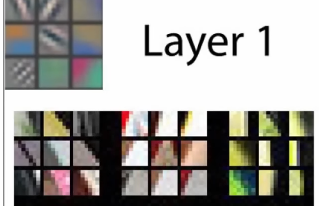
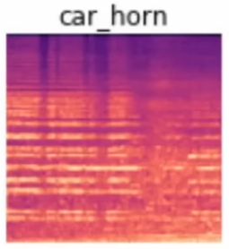
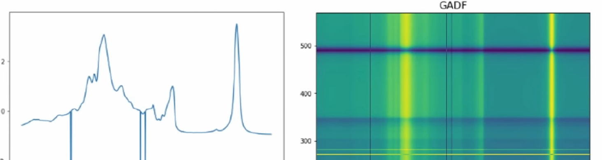
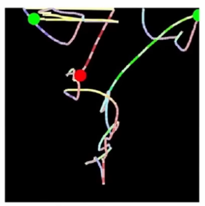
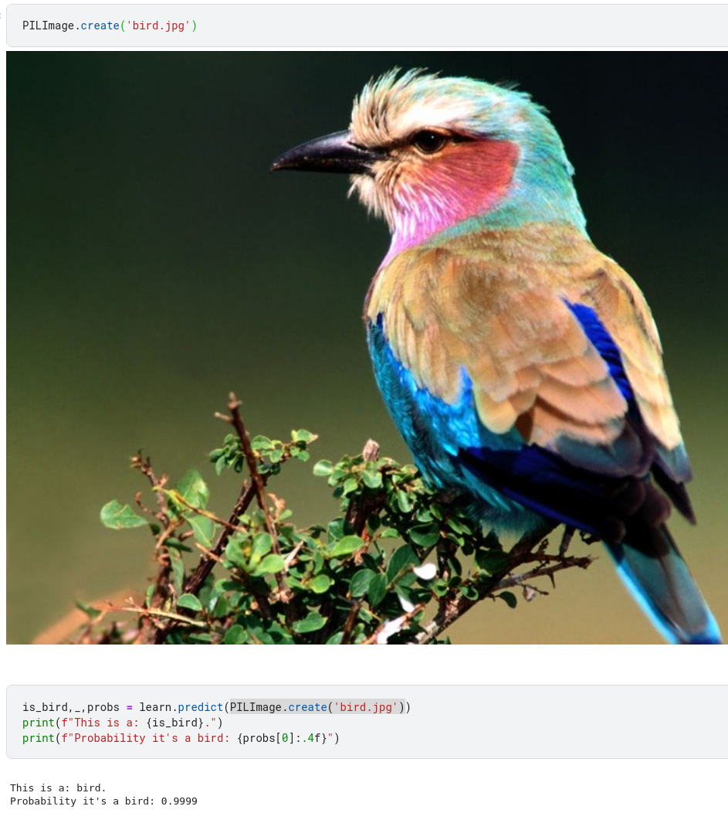
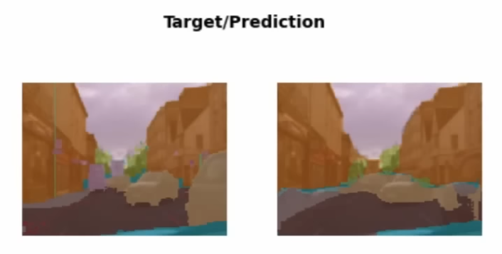
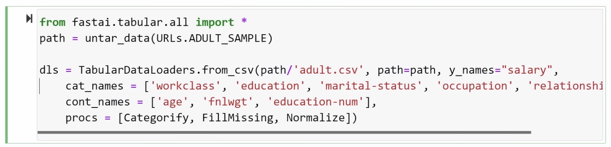
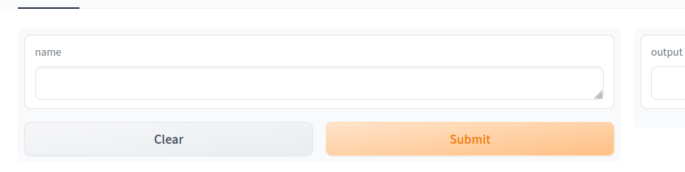
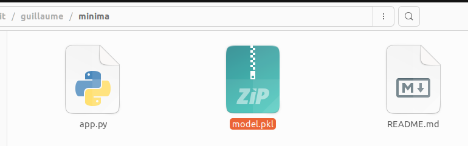

Source of inspiration
Many sources about that, pointing all to https://course.fast.ai/
This is version 5 of this course.
Lesson 1 - Getting started
https://course.fast.ai/Lessons/lesson1.html
Deep learning introduction

In 2015, nearly impossible to recognize a bird with CS. And Jeremy doing that in 2 minutes ;)
Recent progress
After this brief demonstration, Jeremy shared what he remmbers about recent progress in AI such as:
artworks: Dall-e, midjourney to create images from text
explaining jokes: Google Pathways Language Model (PaLM) to explain jokes or run mathematical proof
Self learning of features
Then classical but nice explanation that NN learns features (features are not given or coded) and illustrates that with Matt Zeiler and Rob Fergus works

Vision can be used in many different ways
And it is of course used to classify images, but all these techniques can be combined out of this field for example:
- recognize sound by transforming sound waves into pictures (Ethan Sutin)

- turn timeseries into pictures (Ignacio Oguiza)

- pictures from mouse movements (Gleb Esman)

Tools - pytorch, jupyter notebooks, kaggle
For this course Jeremy suggests to use the kaggle cloud server.
If using someone else notebook, just upvote and click Copy & Edit
https://www.kaggle.com/code/guillaumeramelet/jupyter-notebook-101/edit
And now some hands-on starting with Is it a bird? notebook.
And aside note: Jeremy is running all the presentation through Jupyter notebook and RISE
It’s a good idea to ensure you’re running the latest version of any libraries you need.
!pip install -Uqq libraries upgrades to the latest version of libraries (fastai for example)
Going through this “is it a bird?” notebook
Jeremy shares best practices and steps
Such as viewing your data between each steps
Jeremy uses a lot of functional programming it is why we see things like map used a lot.
DataBlock
Using Datablocks API
To train a model, we’ll need DataLoaders, which is an object that contains a training set (the images used to create a model) and a validation set (the images used to check the accuracy of a model – not used during training). In fastai we can create that easily using a DataBlock, and view sample images from it:
And Jeremy explains the logic between the 5 arguments needed to create a DataBlock:
blocks: tupple with type of inputs and output
get_items: to get all data, here it points to a function to get list of image fileS
splitter: method to split between training set and validation set
get_y: to kown labels, here it is a function
item_tfms: which transformation to apply
And from a DataBlock you create dataloaders (dls) provding (path for images; and bs (batch size))
learners
This is a key part.
Learners are taking 3 arguments: dataloaders, model, metric
And vision models can be from timm.
Here we train a pre-trained model, which is called fine_tune and we do it on 3 epochs.
predict
Just providing an item to lean.predict will return label, tensor value, probability
And it is why we have such outputs

and beyond image recognition
Segmentation

And here we don’t have datablock but direclty dataloaders
Tabular analysis
Here again no need for DataBlock but a direct use of TabularDataLoaders

And the tabular_learner wich takes dls and metric.
Collaborative filtering (recommandation system)
Lesson 2 - Deployment
https://course.fast.ai/Lessons/lesson2.html
In this lesson we will use gradio + huggingface spaces.
Jeremy starts by training a vision classifier and use this 1st model to clean labels using ImageClassifierCleaner
This is not specific to vision.
Gradio + HuggingFace Spaces
create HF repo
Create this minima space from HF.
Aside the explanation on HF, Jeremy shares how useful Github Desktop is.

create 1st gradio app and host it
Create app.py as instructed in our freshly created HF space. Commit Push (using github desktop). Back to HF interface, something is being built. and voila

Nothing new because I played with gradio and HF couple of weeks ago.
We know have a basic app hosted. We can just integrate a deep learning model.
train and export a DL model
And for that Jeremy has setup something on kaggle
They key (and new) part here is
learn.export('model.pkl')Finally, open the Kaggle sidebar on the right if it’s not already, and find the section marked “Output”. Open the /kaggle/working folder, and you’ll see model.pkl. Click on it, then click on the menu on the right that appears, and choose “Download”. After a few seconds, your model will be downloaded to your computer, where you can then create your app that uses the model.

And copy/past it to your local minima repo. Push it to HF.
integrate it with gradio

And Jeremy illustrates how to do it with a notebook and nbdev. Exactly as I did in gradio and huggingface - handson
load model
Main parts are to load the model with
learn = load_learner('model.pkl')run prediction
to run a prediction with
pred, idx, probs = learn.predict(img)call prediction through a function
and to create the classify_image function as expected by gradio
categories = ('Dog', 'Cat')
def classify_image(img):
pred, idx, probs = learn.predict(img)
return dict(zip(categories, map(float, probs))))and this return part is quite complex because gradio cannot deal with Tensors.
create gradio UI
There is now the gradio interface that takes image and returns dictionary.
image = gr.inputs.Image(shape=(192, 192))
label = gr.outputs.Label()
examples = ['dog.jpg', 'cat.jpg', 'dunno.jpg']
intf = gr.Interface(fn=classify_image, inputs=image, outputs=label, examples=examples)
intf.launch(inline=False)export as app.py
And export as app.py and for that Jeremy uses a slightly different version that I used
Mine;
import nbdev; nbdev.export.nb_export('app.ipynb', lib_path='.')His:
from nbdev.export import notebook2script
notebook2script('app.ipynb')https://huggingface.co/spaces/jph00/testing

fastsetup
https://github.com/fastai/fastsetup
clone it with github desktop (will do cmd line I don’t have the option Jeremy has)
launch ./setup-conda.sh that will install mamba. I won’t do it because I already have it installed.
I have an env for fastai conda activate fastai
and install fastai with conda install -c fastchan fastai as mentionned in https://docs.fast.ai. I use conda but it points to mamba in my PC.
then nbdev conda install -c fastchan nbdev
I run these commands with conda update -c fastchan fastai to be sure to get the last versions